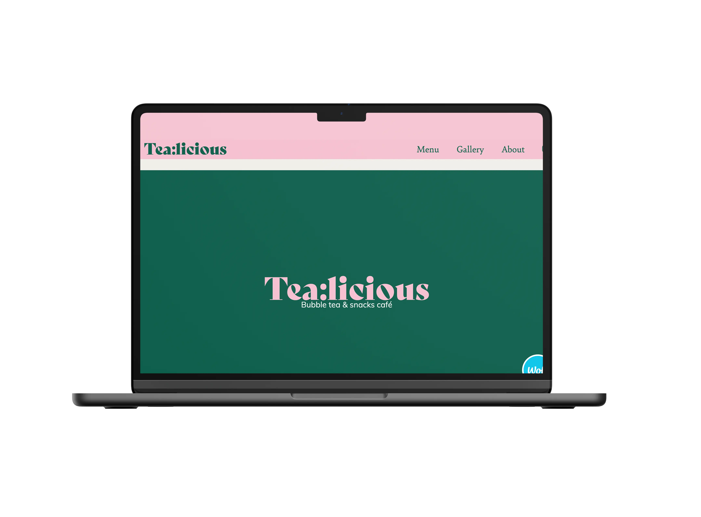

I grundlæggende indhold fokuserte vi på gruppearbeid og redesign av en mærke. I denne oppgaven var våres mål å lage et redesign for en forbedret brukeropplevelse av Tea:licious. Processen begynte med gruppekontrakt hvor vi ble enige om hvordan vi skal håndtere ulike situasjoner. Vi implementerte scrum metode hvor vi ble enige om at Emma skal være scrum master og lagde Trelloboard som hjalp oss til å ha kontroll over hvor mye vi skal gjøre og hva vi har gjort. Jeg hadde ansvar for å produsere en video og lage galleri page. Jeg brukte Grid Layout som jeg ble introdusert tidlig i dette semestret. Jeg brukte tre kolonner som tilsvarer 1fr 1fr 1fr, men kun en kolonne i mobil versjon. Det lærte meg viktigheten av grid og hvor enkelt det er å plassere bildene ved hjelp av denne layouten. Det sværeste var å å filme Tea:licious slik at brukeren kan forstå mærke og få en feeling av å få lyst til å kjøpe bobble tea. I fremtiden ville jeg valgt å bruke clean background og få en klarere “product shot”.
REDESIGN
TEMA: Tea:licious
